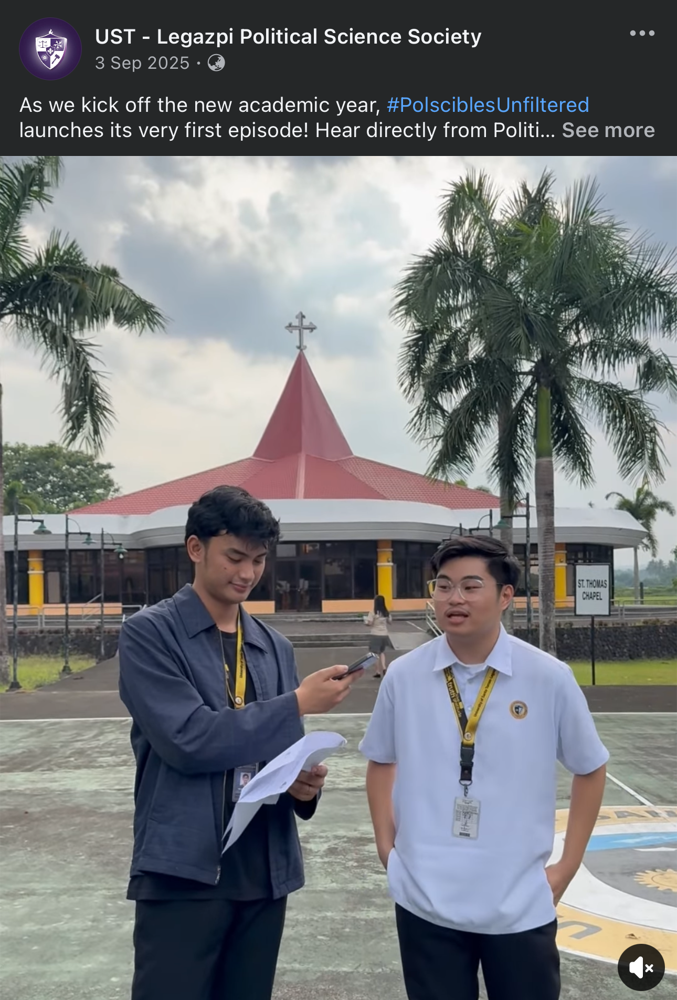
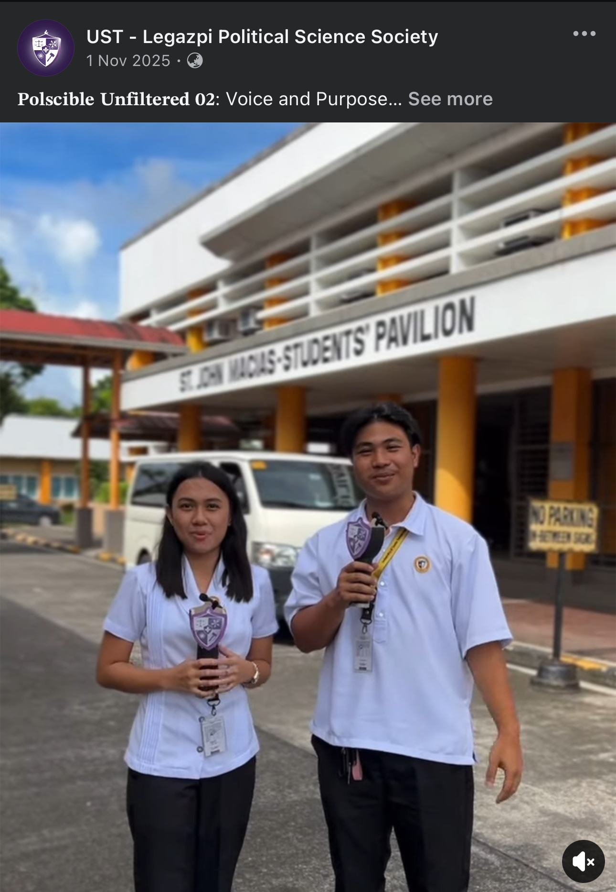
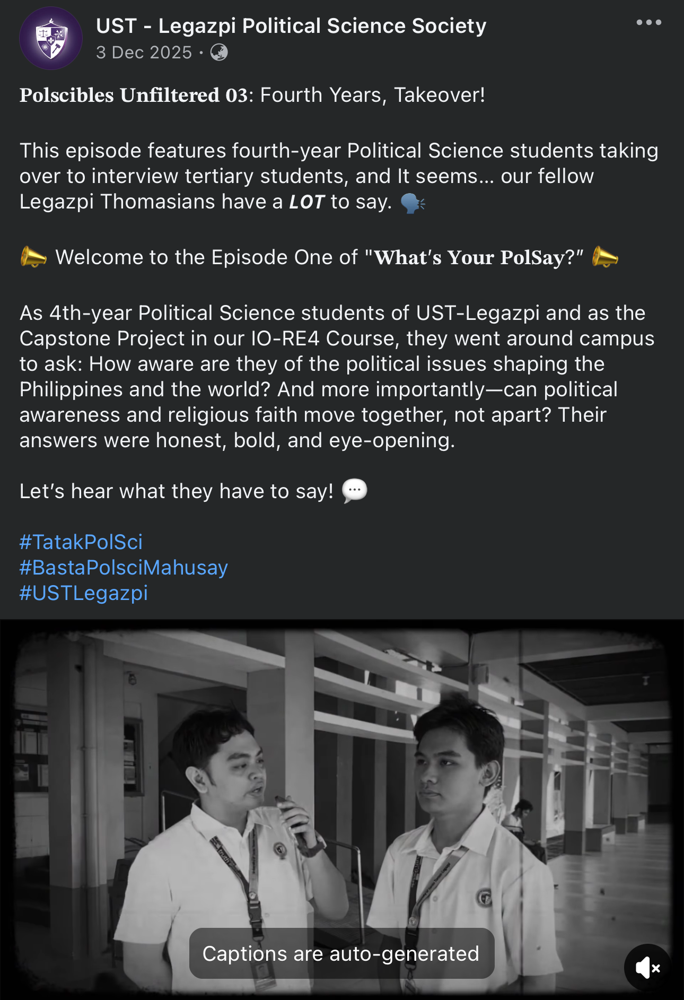
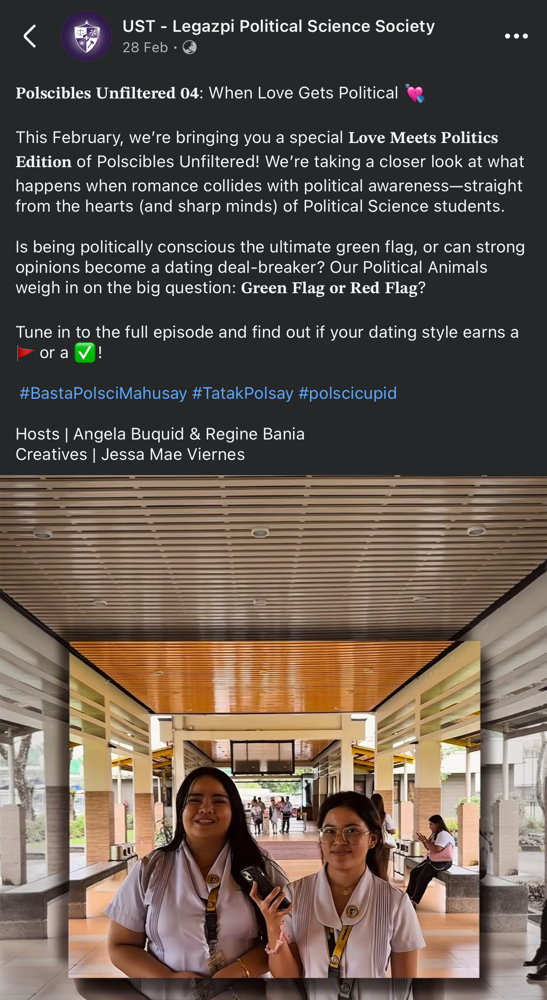
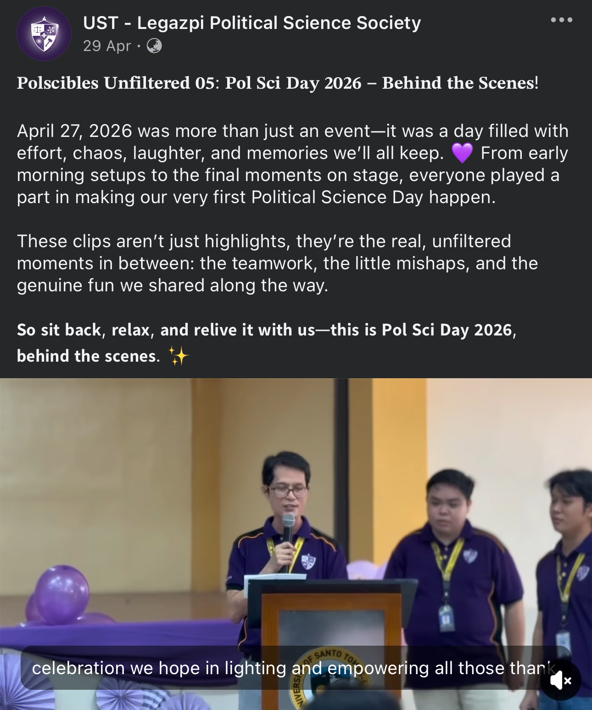

PolScibles Unfiltered is a video series created by the UST-Legazpi Political Science Society that highlights the thoughts, opinions, and experiences of Political Science students through engaging and interactive interviews.
Each episode tackles different themes related to student life, politics, current events, and social perspectives in an unfiltered and relatable manner. The series aims to encourage student participation, promote critical thinking, and provide a platform where students can freely express their insights and opinions.

The first episode of PolScibles Unfiltered served as the opening installment of the video series, featuring Political Science students sharing their expectations, goals, and insights for Academic Year 2025–2026. Through candid and unfiltered responses, the episode encouraged student participation and provided a platform for learners to express their thoughts, aspirations, and perspectives as they begin a new academic journey.
Watch on Facebook
The second episode, titled “Voice and Purpose”, highlighted the unfiltered opinions and experiences of Political Science students regarding topics relevant to their academic life and personal growth. The episode aimed to strengthen student engagement and self-expression by allowing participants to openly share their perspectives, ideas, and reflections within the Political Science community.
Watch on Facebook
The third episode featured fourth-year Political Science students taking the lead in interviewing tertiary students around the campus. Through interactive and spontaneous conversations, the episode showcased the diverse opinions, sentiments, and experiences of fellow Legazpi Thomasians. This segment promoted communication, confidence, and student interaction while encouraging meaningful and relatable discussions among students.
Watch on FacebookEpisode 3.2: “What’s Your PolSay?”
Watch Episode 3.2
In celebration of February, the fourth episode explored the relationship between romance and political awareness through the theme “When Love Gets Political.” Political Science students shared their insights and experiences regarding how political beliefs, social awareness, and personal values may influence relationships and interactions. The episode promoted open-mindedness, critical thinking, and meaningful conversations on social and political perspectives in everyday life.
Watch on Facebook
The fifth episode documented the behind-the-scenes moments of Political Science Day 2026, capturing the preparation, teamwork, challenges, and memorable experiences of students and organizers. From the early preparations to the culmination of the event, the episode highlighted the dedication, cooperation, and camaraderie that contributed to the success of the celebration. It served as a reflection of the hard work and unity within the Political Science community.
Watch on Facebook